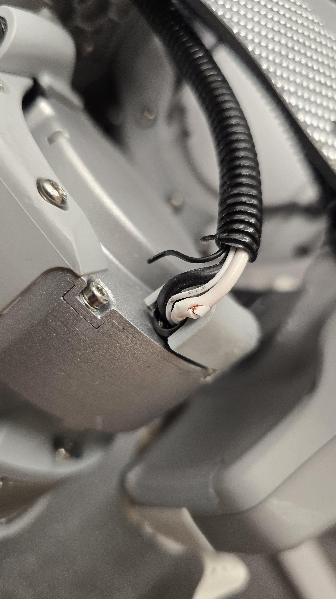
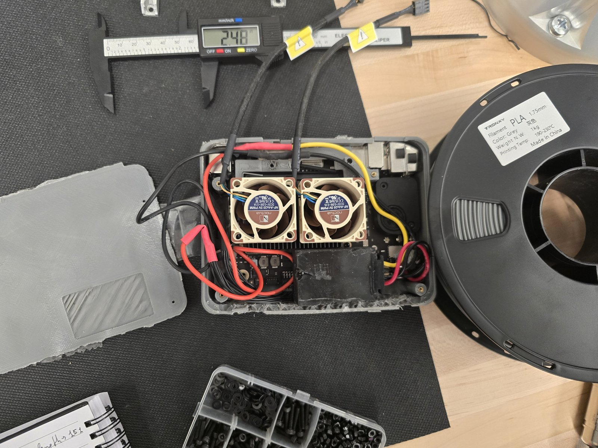
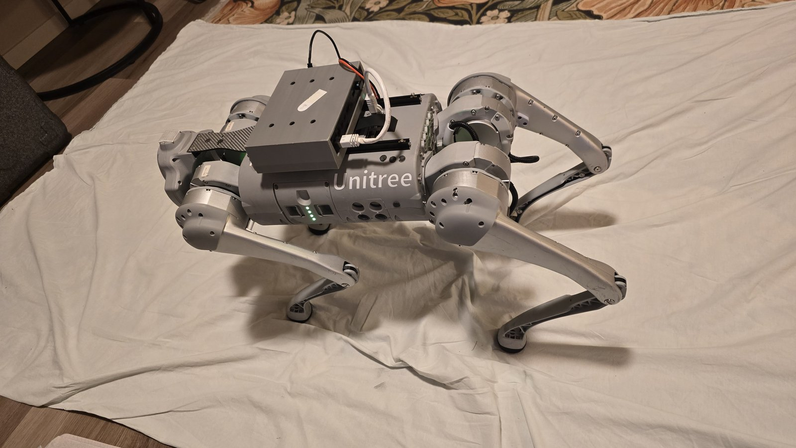
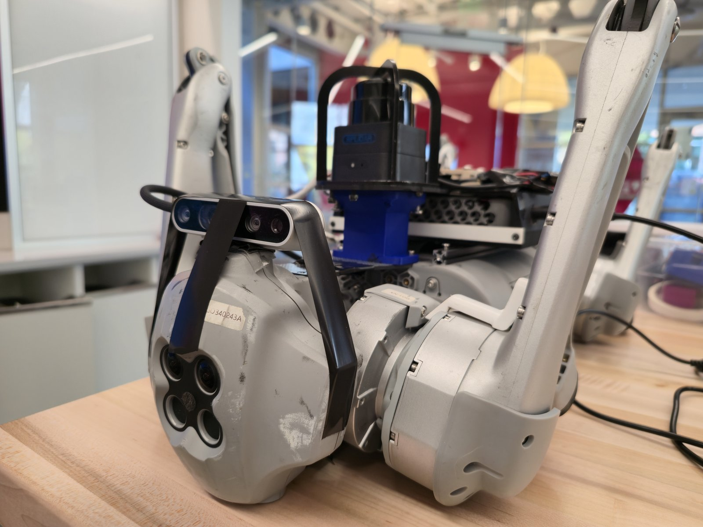
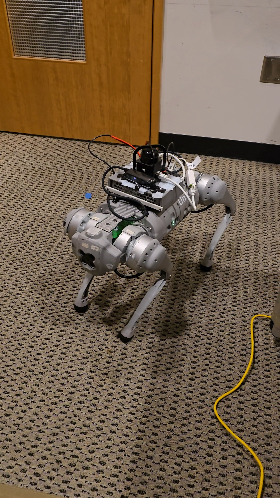
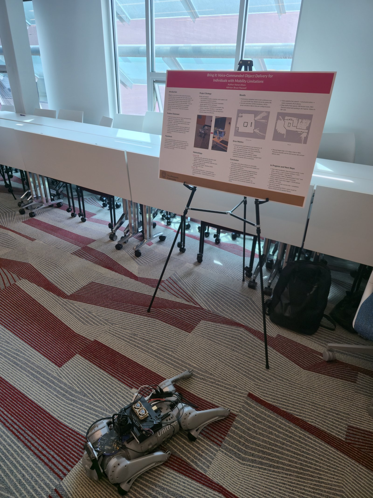

Companion Robot Dog
Voice-commanded autonomous navigation with Unitree Go1
Highlights
Initial teleop
First time driving the dog around by hand to get baseline control before any autonomy.
Navigation, first time working
The first sustained autonomous run, with navigation finally holding together end to end.
Home → arm
Autonomous run from home to the arm. The waypoints are named after real objects in the demo room.
Arm → board
The next leg, "arm" to "board," chaining named waypoints into a longer route.
Challenges

A severed leg cable
March 4
New code, a new controller, first day mapping in the lab. I powered the dog on the usual way (short press, long press, wait for the white neck LEDs to flash ready), grabbed the controller to stand it up, and nothing. That was new.
I tried again, same thing. After the third try I was sure something was wrong, but what? The dog had been working fine the day before, and I hadn't touched the legs or the body wiring since then. I had a hunch it was a hardware issue though.
I opened the mobile app (it connects to the dog's onboard Wi-Fi for temps, battery, joints, connection) and that gave it away: the dog believed it was standing, but showed its front-right leg still folded. Checking the wiring from the body to the legs, there it was: a tiny severed cable in the front-right leg. Annoying, and it cost a few days of testing, but as failures go this was the best case: found in minutes, not hours.

Thermal shutdowns and a custom case
mid-to-late March
During early teleop and mapping the dog kept dropping the connection to the Mac. I shrugged the first one off and restarted. But a "restart" here means walking the dog back to its home coordinates, manually relaunching the Mac, reopening the whole stack. It cut out again. And again.
On the fourth round I watched temps and memory: with the full stack running, the temperature just climbed until emergency protection shut the system off. That made sense, but it was still annoying. The Mac mini's case had been redesigned and custom-printed to mount on the robot, which threw out whatever cooling the original case provided. So I had to design and iterate on yet another print, this time to fit a pair of 5V Noctua PWM fans right on the heatsink. Three redesigns later, the last version was ready in late March, and the temperature problems were gone for good.
Gallery



